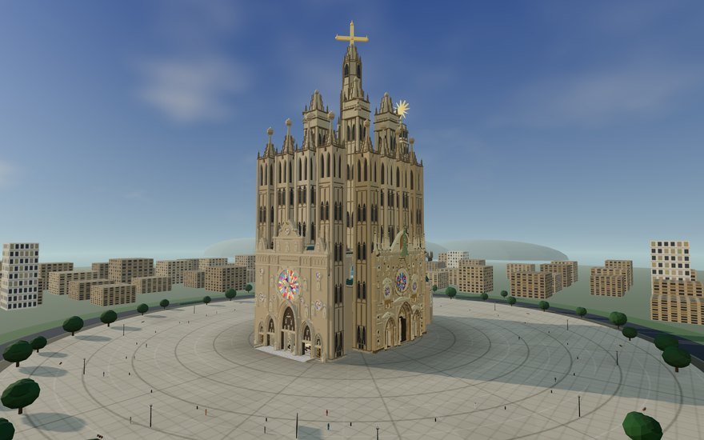
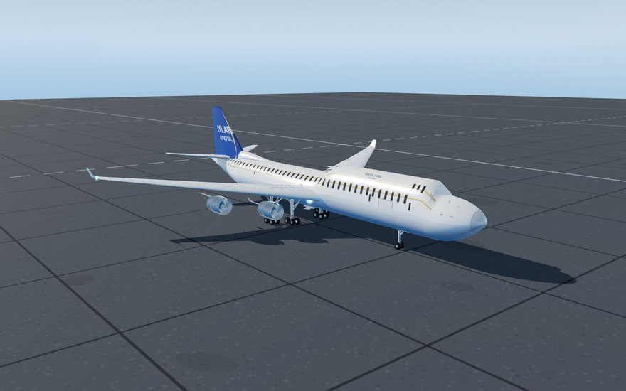
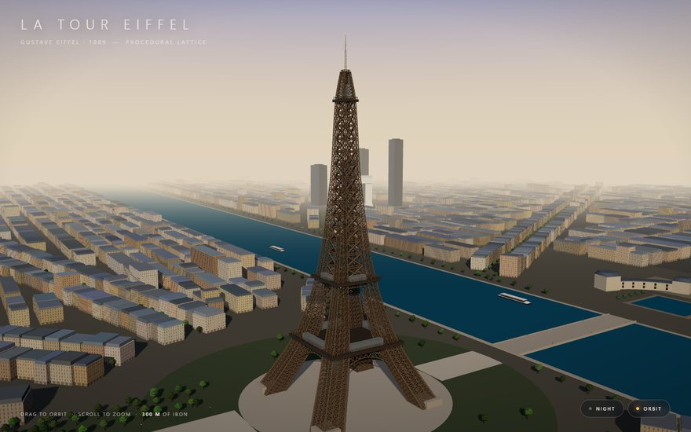
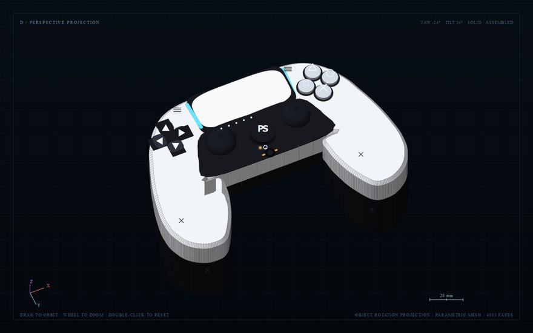
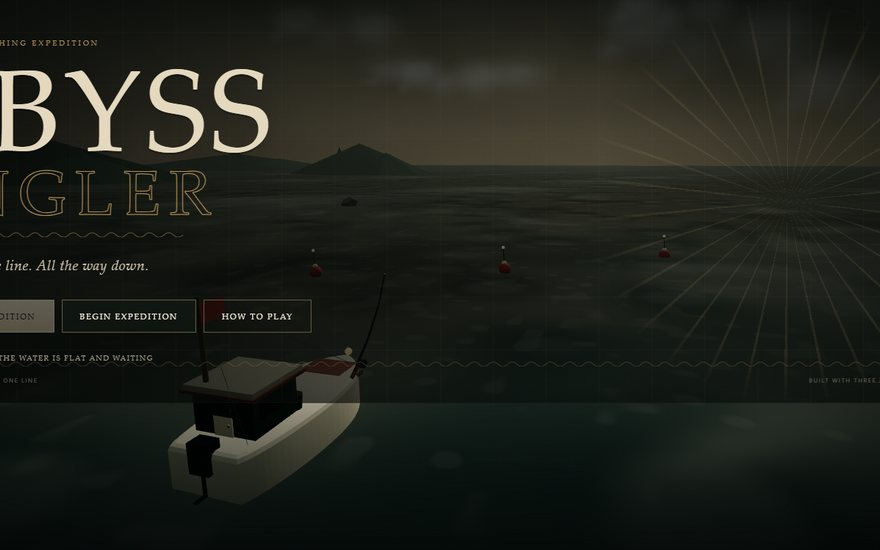
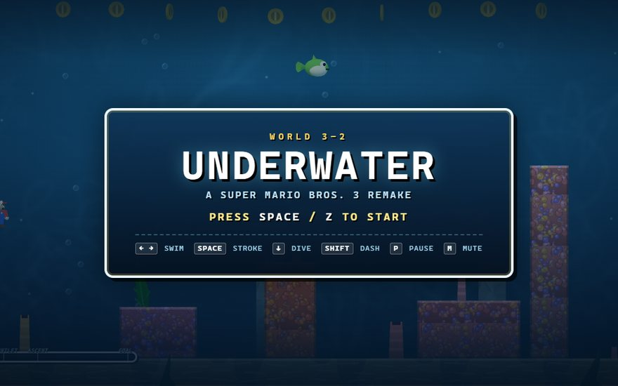
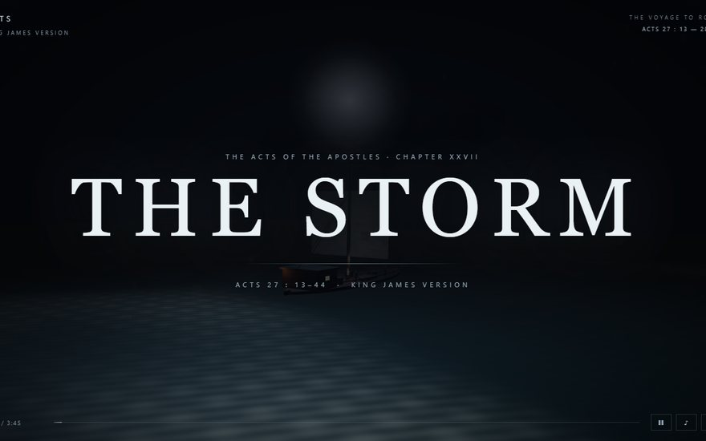
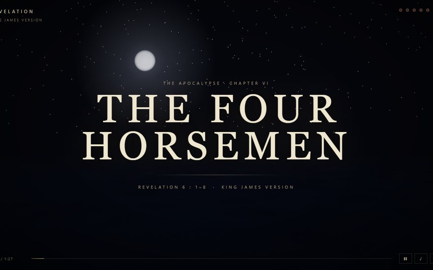
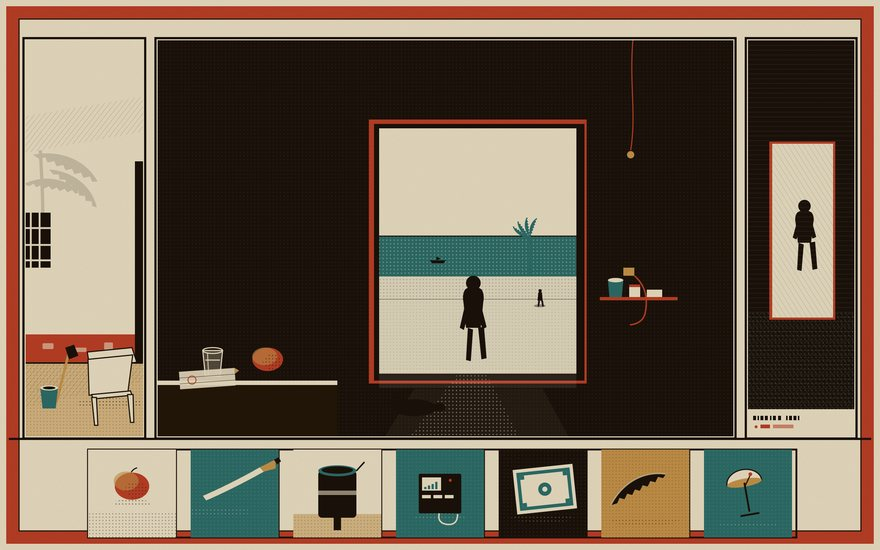
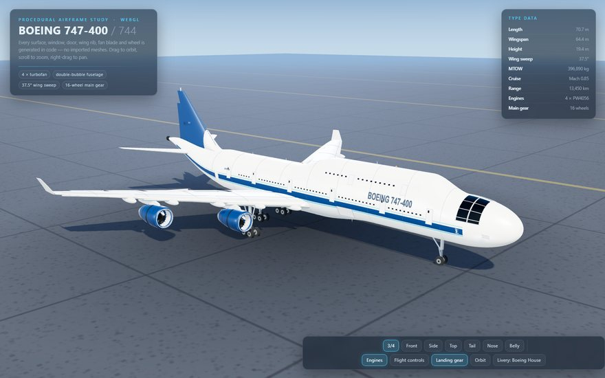

A working collection · 2024—2026
Made of
code.
Twelve browser-native experiments: a walkable basilica, aircraft, games, short films, vector paintings and a controller atlas. No imported artwork — every surface is generated at load time.

Architecture · WalkableOpen ↗La Sagrada Família
An extreme-detail procedural basilica at 1:1 scale. Walk the nave, free-fly the eighteen towers, take the guided tour, or open the Study views: mesh, section and isolate.

Aircraft · ProceduralOpen ↗Boeing 747-400
Every panel line, window, gear bay and engine surface generated in code. Orbit the airframe, lower the gear, open the cockpit.
Boeing 747-8
The longer Intercontinental, rebuilt from code: stretched fuselage, new wingtips, cockpit and a detailed undercarriage.

Architecture · ProceduralOpen ↗La Tour Eiffel
300 metres of iron lattice generated from silhouette curves, standing in a procedural Paris with the Seine, blocks and landmarks.

Studies · SVGOpen ↗DualSense Atlas
A 208-entity ontology of the PlayStation 5 controller, rendered as linked SVG projections. No WebGL, no external assets.
DualSense Study
A fully procedural recreation of the PS5 DualSense — shell, sticks, triggers, materials, studio lighting and interface.

Game · Three.jsOpen ↗Abyss Angler
A deep-water fishing game with five waters, a full fight system, a bestiary, a workshop and a working depth sonar.

Game · RemakeOpen ↗World 3-2
A 3D remake of the reef level: coral gardens, a tunnel, Boss Bass, the frog suit and a flagpole finish.

Film · 3m 45sOpen ↗The Storm
A long-form 3D retelling of Acts 27 — the south wind, the Euroclydon, fourteen nights, the shipwreck and the escape to Melita.

Film · 88sOpen ↗The Four Horsemen
The opening of the first four seals in an 88-second procedural sequence: scroll, wax, riders, horses, dust and embers.

Art · SVGOpen ↗TROPICO 2026
Seven vector paintings from a fictional Caribbean republic — one year, one country, seven ways of looking at it.

Aircraft · ShowcaseOpen ↗HHIB 747-400
A self-contained WebGL 747-400 showcase. Every airframe surface is generated in code; the whole folder runs offline.
No studies in this drawer yet.